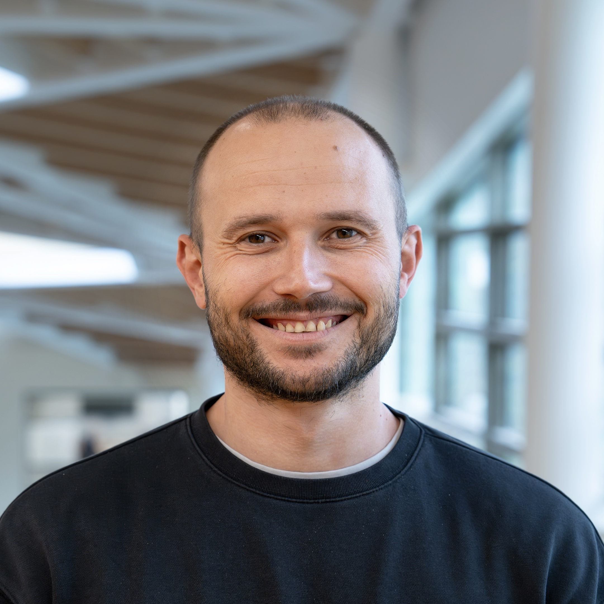

Fedor Shmarov
I am a Lecturer in the School of Computing at Newcastle University and a member of the Advanced Model-Based Engineering and Reasoning (AMBER) research group. My research interests include cyber-physical systems, formal methods, model checking, software verification and computational modelling. [Academic CV].Recent Publications
- F. K. Aljaafari, F. Shmarov, E. Manino, R. Menezes, L. C. Cordeiro, "EBF 4.2: Black-Box Cooperative Verification for Concurrent Programs (Competition Contribution)", In 29th International Conference on Tools and Algorithms for the Construction and Analysis of Systems (TACAS 2023), (accepted/in press), 2023.
- F. K. Aljaafari, R. Menezes, E. Manino, F. Shmarov, M. A. Mustafa, L. C. Cordeiro, "Combining BMC and Fuzzing Techniques for Finding Software Vulnerabilities in Concurrent Programs", IEEE Access, vol. 10, pp. 121365-121384, 2022.
- K. Alshmrany, A. Bhayat, F. Brauße, L. C. Cordeiro, K. Korovin, T. Melham, M. A. Mustafa, P. Olivier, G. Reger, F. Shmarov, "Position Paper: Towards a Hybrid Approach to Protect Against Memory Safety Vulnerabilities", in IEEE Secure Development Conference (SecDev 2022), Atlanta, GA, USA, pp. 52-58, 2022.
Software Projects
ESBMC - bounded model checker based on
satisfiability modulo theories for the verification of single- and multi-threaded C/C++ programs
ProbReach -
application for computing probabilistic bounded reachability in stochastic parameteric hybrid systems
BioPSy - application for guaranteed parameter set synthesis in biological systems.
Contact information
Address: Urban Sciences Building, 1 Science Square, Newcastle upon Tyne, NE4 5TG
Email: fedor.shmarov@newcastle.ac.uk